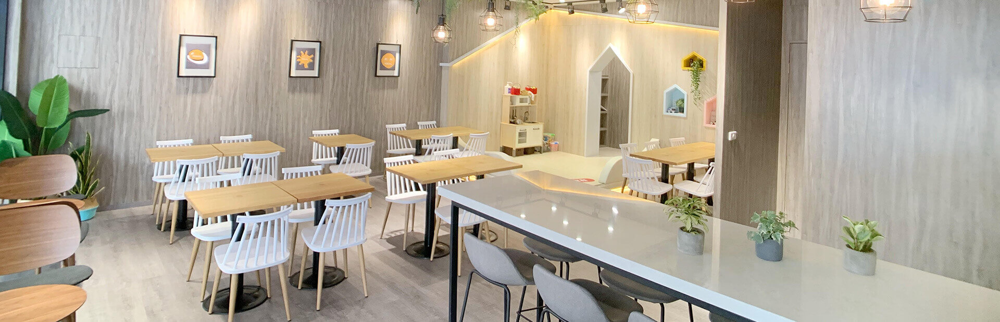

最新活動
美味菜單
門市據點
關於我們
聯絡我們

早安美芝城
Good Morning
關於我們
About
關於我們
因為早餐所以美好的40年經典
在漢堡三明治還很新潮的年代
早安美芝城即投入台灣西式早餐市場
40年來天天走在黎明前，用美味喚醒你我的每一天
是台灣美好的日常之一
2023
榮獲Shopping design best100【年度原創品牌獎】∣破框世代 四十不惑的經典新生
榮獲經濟部中小企業處112年BUYING POWER社會創新產品及服務採購首獎，連續第5年獲獎！持續打造良善供應鏈創造社會共好價值
串聯全台人氣酒吧「晚安美芝城」運用美芝城蛋餅、鐵板麵、大冰奶、番茄醬推出期間限定的「開醺早餐」
2022
早安美芝城攜手「鮮乳坊」限定聯名包裝上市
聯手生活與品牌服飾選貨店 plain-me 設計全新制服與聯名服裝系列 將早餐品牌進化為生活美學品牌
榮獲經濟部中小企業處111年BUYING POWER社會創新產品及服務採購首獎，連續第4年獲獎！持續打造良善供應鏈創造社會共好價值
2021
2021 早安美芝城 x 台南早餐生活節。由深耕台灣近40年的早餐品牌「早安美芝城」首度發起打造「回到過去」「感受未來」兩大快閃店，翻轉大家對早餐生活的想像，100間以上品牌與期間限定的菜單，建立100種早餐生活提案！
早安美芝城榮獲經濟部中小企業處110年BUYING POWER社會創新產品及服務採購首獎，連續第3年獲獎，持續打造良善供應鏈創造社會共好價值
2020
早安美芝城榮獲經濟部中小企業處109年BUYING POWER社會創新產品及服務採購首獎，連續第2年獲獎，持續打造良善供應鏈創造社會共好價值
臺北文創記憶中心「嘿，早餐吃什麼？」展覽以內容顧問梳理台灣早餐店文化
2019
早安美芝城榮獲經濟部中小企業處108年BUYING POWER社會創新產品及服務採購首獎，支持在地優質的生產者，讓台灣這塊土地變得更美好! 榮獲1111調查「幸福企業大賞」品牌，在連鎖早餐品牌中票選名列前茅。
2018
空間是當代美感語彙，延伸家的概念，顛覆一般對早餐店的想像，推出加盟體系-「概念店系列」。
2017
榮獲網路溫度計調查「口碑最佳五大早餐店」，唯一上榜的連鎖加盟品牌。
2016
愛是無所不在，全新推出行動餐車，將早餐送到偏鄉，讓愛遍及台灣
與蠟筆小新動畫電影跨界合作《爆睡!夢世界大作戰》
2015
榮獲第十六屆台北國際連鎖加盟大展「十大傑出品牌」
榮獲第十二屆高雄國際連鎖加盟大展「十大傑出品牌」
與潮流手錶品牌G-SHOCK合作舉辦集點抽錶活動
拍攝「讓夢想 早點開始」系列訪談影片
2014
獲網路溫度計調查「全台最夯早餐店」人氣名列前茅。
與潮流手錶品牌G-SHOCK合作舉辦集點抽錶活動
拍攝「讓夢想 早點開始」系列訪談影片
2013
全面啟動店觀升級轉型計畫
美芝城文化基金會與家扶基金會合作，提供弱勢族群就業機會
網路溫度計調查「全台最夯早餐店」網路人氣排行第三名
與伊甸基金會合作，共同為發展遲緩兒愛心募款
經濟日報系列報導早安美芝城創始起源、加盟主創業故事
2012
成立「美芝城文化基金會」，參與華山、創世、飢餓30等公益活動，回饋社會，善盡企業責任
2011
榮獲30雜誌「30世代消費品牌大調查─外食早餐渴望品牌」第一名
第四代「早安！美芝城」新活力系列全新推出
2004
第二代「早安！美芝城」加盟體系問市
2001
建造佔地近1800坪的中央工廠與企業總部
1995
品牌轉型，第一代「早安！美芝城」加盟體系成立
1989
成立「美而美食品廠」
1983
開設第一家「美而美漢堡店」